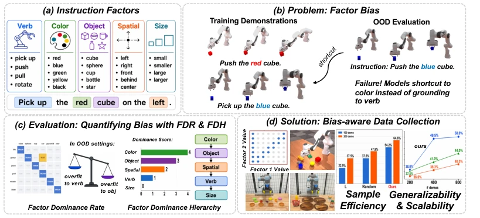
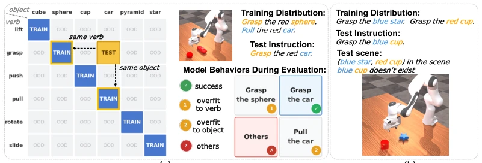
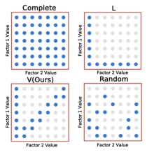
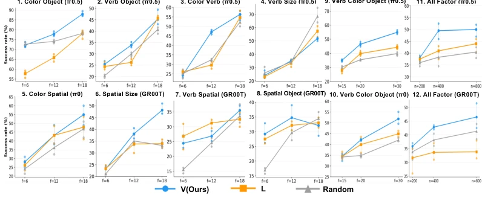
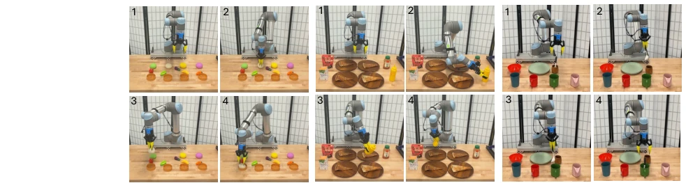

This paper conducts an in-depth analysis of robots' "slacking" behavior. Although the industry has long known that pre-training strategies take shortcuts (e.g., looking only at color, not verbs), previous evaluations were too coarse, knowing only of failure but not which specific factor caused it. The authors introduced FDR and FDH metrics to quantify this "factor bias," finding color is most dominant, while verbs and size are weakest. Although experiments focused mainly on tabletop manipulation, somewhat limited, the proposed bias-aware data collection strategy indeed reduced demonstration data by half, which is quite practical. However, whether this hierarchy is generalizable across different scenarios remains questionable, as real robot environments are much more complex than simulation.
Current robot learning relies on piling up data, but more data does not mean it can understand human language. Existing studies [5, 6] focus on dataset diversity, [7, 8] focus on language perturbation, but all only report success rates, without indicating which specific instruction factor caused the failure. For example, a model might associate "blue" with "grasp" in training data, so upon seeing blue during testing, it grasps, regardless of whether the verb is "push" or "pull". This fine-grained shortcut behavior remains unquantified, leading to a lack of direction for improvement. This paper aims to fill this gap by diagnosing factor bias to guide data collection, addressing the bottleneck of compositional generalization.

Figure 1: (a) We decompose language instructions into factors. (b) We identify the problem of factor bias: during finetuning, pretrained models tend to overfit to the training data containing certain factors compared with others. Such as models overfit to “blue” (color) for picking up the cube instead of pushing it (verb). (c) We quantify this bias with Factor Dominance Rate (FDR) for pairwise factor evaluation and Factor Dominance Hierarchy (FDH) for global ranking. (d) We introduce diagnosis-guided bias-aware data collection for sample-efficient and generalizable policy learning.
The overall process is: instruction decomposition -> bias diagnosis -> strategy generation. First, instructions are decomposed into five factors: verb, color, object, size, and spatial attributes. The core innovation is FDR (Factor Dominance Rate), constructed by building conflict scenarios (e.g., "push" paired with "ball" during training, "push" paired with "car" during testing but the scene only has "ball" and "car"), observing whether the model overfits to the training verb or object, and calculating the bias value. Then, Copeland ranking is used to obtain FDH (Factor Dominance Hierarchy). Finally, based on FDH results, the V strategy is proposed, tilting the limited demonstration budget towards factors ranked lower in FDH (e.g., verbs, size), rather than random or uniform sampling. Specific implementation is divided into three phases: fixed baseline varying single factor, all factors varying synchronously, single factor leading change, ensuring coverage of key combinations.

Figure 3: Factor correlation experiment setups. (a) The (verb, object) setting. During inference, only two objects are in the scene with the same color: the target object(“car”) and the verb-paired object during training(“sphere”). We compute FDR by checking whether it overfits to the training- paired verb or to the training-paired object. (b) The (color, object) setting follows similar training and inference setup; at inference, the instructed object does not exist in the scene.

Figure 5: Methods.
实验Experiments
在 ManiSkill 仿真和 UR5 真机上测试。仿真用了 6 个 VLA 模型（如 π0, GR00T），真机做了 Bun、Pizza、Cup 三个任务。基线包括 Random 和 L 策略。结果显示，在相同演示预算下，V 策略在大多数设置下优于基线，特别是在颜色主导的配对中提升显著。真机实验证明，V 策略用一半演示数据（100 vs 200）就能达到甚至超过基线全量数据的效果。消融分析表明，针对弱因子（如尺寸）的采样确实能提升泛化，但尺寸本身太难学，效果受限。与 Complete 策略相比，V 在小预算下表现更好，避免了数据稀疏问题。
Tested on ManiSkill simulation and UR5 real robot. Simulation used 6 VLA models (e.g., π0, GR00T), real robot performed Bun, Pizza, Cup three tasks. Baselines include Random and L strategy. Results show that under the same demonstration budget, the V strategy outperforms baselines in most settings, with significant improvement especially in color-dominant pairings. Real robot experiments prove that the V strategy achieves or even exceeds the baseline full-data effect using half the demonstration data (100 vs 200). Ablation analysis indicates that sampling for weak factors (e.g., size) indeed improves generalization, but size itself is too hard to learn, limiting the effect. Compared to the Complete strategy, V performs better under small budgets, avoiding data sparsity issues.

Figure 4: Simulation Experiment Results. Each panel plots the success rate under factor change f or demonstration budget n. In plot 11, 12, f = 50, in all other plots, n = 200. Each checkpoint is evaluated under three random seeds, each seed with 200 rollouts. Dots are per-seed runs, lines represent their mean values. More results and details are provided in the supplementary materials.

Figure 7: Real-robot Experiment. We conduct experiments on three manipulation tasks: Bun, Pizza and Cup. Each task contains 16 instruction variants with randomized spatial configurations.